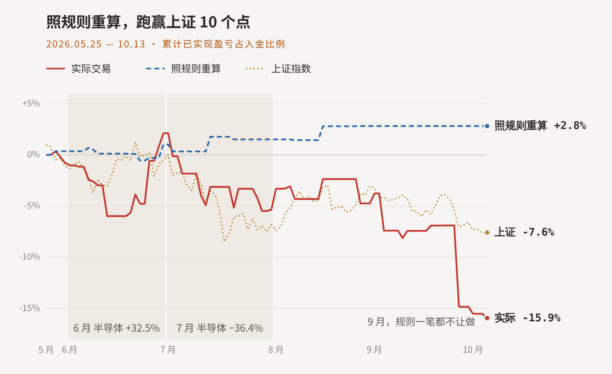
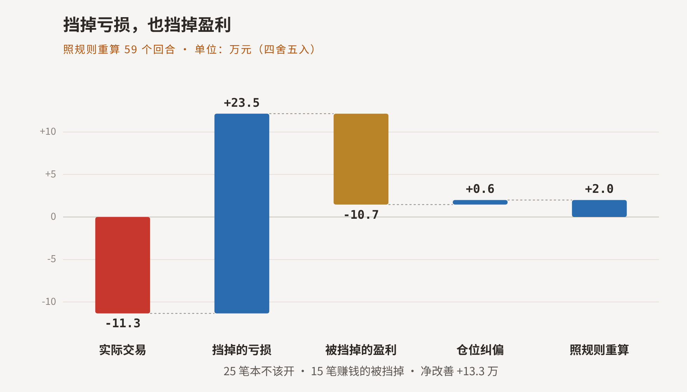
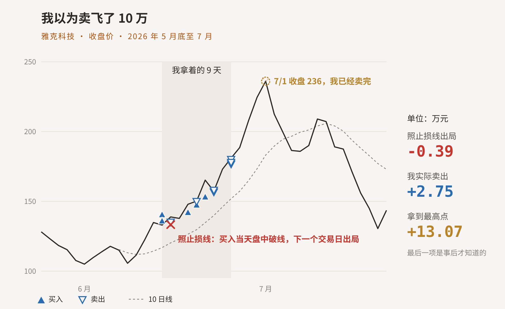

把过去四个多月的 59 笔真实交易，按新规则重算一遍，账单出来，挺让人沉默的：规则能挡住我大部分亏损，也会挡掉我最赚钱的几笔。
这套规则不是新的。从 3 月开始我就一直在写，今天补一条，明天加一条，缝缝补补。最近才把它们从头理了一遍，配合 AI 执行，起名叫「铸剑」：用规则这把剑，护住自己的曲线（愿景是这样的）。
然后我让 AI 拿着它，把这 59 笔交易一笔一笔重走，只用当时知道的信息，不用后来的走势。
这又把我带回一个老问题：短线交易，到底是技术，还是艺术？

如果这四个多月我照着规则不动摇，重算下来是 +2.8%，跑赢上证十个点。现实里，加上我的临场发挥，是 -15.9%（已实现盈亏占入金）。同期上证 -7.6%。
当然，蓝线是用现在的规则回头重算，不是实盘。规则本身也是从这几个月的教训里磨出来的，真正的检验，在接下来的实盘里。
技术：能写成规则的，交给规则
规则挡掉的亏损约 23.5 万。我把最大的几笔翻出来，几乎是同一个样子：条件不满足，我买了；跌破止损线，我没走。

这些事，当时的笔记里我自己都写了。楚天龙那笔，9 月初买进去本想做个短线，破了止损线没舍得走，硬生生熬了大半个月，短线熬成股东，最后亏了五万出来。事后我说：达到了止损点，就一定要止损。写的时候，钱已经亏完了。
后来盘前自省，我才认下这句话：我的问题就是短线做成了长线。亏了就会亏好多，也不舍得割；赚了就会跑得很快。
浮亏加仓的数字更干净：违反 10 次，8 次亏钱。
所以，亏钱不是因为不知道，是知道了还做。贪、侥幸、想回本，这些靠「下次注意」改不掉，只能交给规则：写死，到线就走。那天我还写了一句：「执行止损永远比幻想回本便宜。」
行情差的月份，规则最值钱。7 月半导体跌了 36%，照规则算，能少亏 5.7 万；9 月又是 7.2 万。
什么时候不能买、跌到哪里必须走，这些已经能写清楚的，就不该再靠临场。
我以为的短板
回测之前，我对自己的判断是：短板在胆子。怕高，该上的不敢上；拿不住，赚一点就跑。印象最深的是雅克科技，我总觉得自己卖早了，少赚了十万。
所以我让 AI 专门测了这两件事。结果出来，发现记忆挺会骗人的。
第一件，怕高。 9 月初我在笔记里写过：怕高和图便宜是待检验的决策偏差。这次拉出全量数据一验，真正「规则允许、我却不敢上」的，四个多月里只有 1 次。那段时间我盯着没买的种业，其实是规则拦住的，而且拦对了：20 天后板块跌了 13%。
第二件，卖飞。 就是让我耿耿于怀的雅克科技。

照止损线，买入当天盘中就破了线，下一个交易日就得走，小亏 0.39 万。我没走，拿着分批卖，赚了 2.75 万。之后它又涨到 236，拿到最高点是 13 万，可那是卖完以后才知道的。
这一笔，规则本来就不让买，它挡掉的是我最好的一笔。至于卖飞：以我那天的买点，能拿到的，我已经拿到了。
把所有赚钱的单子都测一遍，简单改成按 10 日线退出，21 笔里有 20 笔反而赚得更少。
回头看，亏钱和卖早，其实是同一种人性的两面。亏损的时候，怕割了就反弹，所以不止损；赚钱的时候，怕守不住利润，所以卖得早。楚天龙是前一种，雅克是后一种，只不过那一次，怕对了。
在弱势里，卖早是对的，规则也是这么看的。行情好的时候呢？6 月那 7 笔赚钱的，按 10 日线拿住也只有 1 笔多赚。只是好行情就一个 6 月，我还不能下结论。
还写不成规则的
那艺术在哪里？我想是两件：判断大势，选对龙头。数据还撑不住，只有些线索。
大势。 科技涨得最猛的 6 月，是唯一一个我做得比规则好的月份。那个月，规则显得太紧。
龙头， 这是我下阶段的重点。能比较的 18 笔里，只有 1 笔买在当天板块连板最高的龙头上：紫光股份，第二天卖掉，赚了 1.3 万，是全期最干净的一笔。
还有三笔要重点提一下：笔记里明明已经写下了核心标的的名字，最后下手买的却是别的票，3 次全亏。
看得见，下不去手，到底是怕龙头太高，还是想在后排图个便宜？答案不说我也知道，两者都是。
节奏：先守住，再看对
所以，短线交易是技术还是艺术？
我现在的回答是：能写成规则的，是技术，交给规则；还写不成规则的，判断大势、选对龙头，是艺术。
所以，还写不成的，就接着记、接着验，验出一条，就交给规则一条。
总结一下
照规则重算，守住，就跑赢了大盘。
往后要做的，是选对龙头、拿住它，去赚短线真正的那份超额收益。